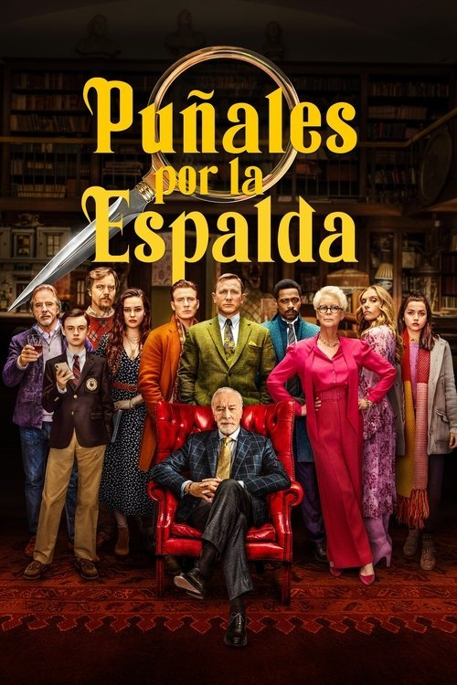

Puñales por la espalda (2019)
Sinopsis Rápida
Cuando el patriarca de una familia multimillonaria muere repentinamente, un detective privado brillante debe desenredar una red de secretos, mentiras y sospechosos en una mansión llena de lujos y traiciones.
Sinopsis Detallada
En una retorcida y sofisticada trama, Benoit Blanc, un detective con un ingenio agudo, investiga la muerte del famoso escritor Harlan Thrombey. Rodeado de una familia disfuncional, llena de avaricia y resentimientos, Blanc debe discernir la verdad entre las mentiras elaboradas y las sospechas mutuas. La película destaca por sus giros inesperados y su exploración de la moralidad y las relaciones familiares. Con un reparto estelar y diálogos ingeniosos, "Puñales por la espalda" es un thriller inteligente y entretenido que te mantendrá al borde de tu asiento.
¿Por qué tenés que verla?
{{PUNTOS_CLAVE}}Idea Extra
Análisis de los paralelismos entre la novela clásica de Agatha Christie y la película, comparando las técnicas narrativas y los arquetipos de personajes.
{{CONTENIDO_RELACIONADO}}